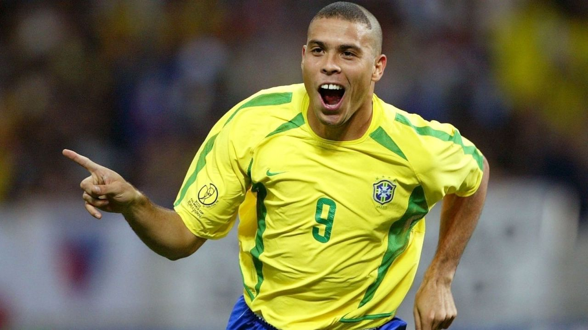

Ronaldo, właśc. Ronaldo Luís Nazário de Lima ; ur. 18 września 1976 w Rio de Janeiro) – brazylijski piłkarz, który grał na pozycji napastnika. Oprócz brazylijskiego posiada także hiszpański paszport. Najmłodszy w historii laureat nagrody Piłkarz Roku FIFA dla najlepszego piłkarza świata i Złotej Piłki dla najlepszego piłkarza grającego w Europie.